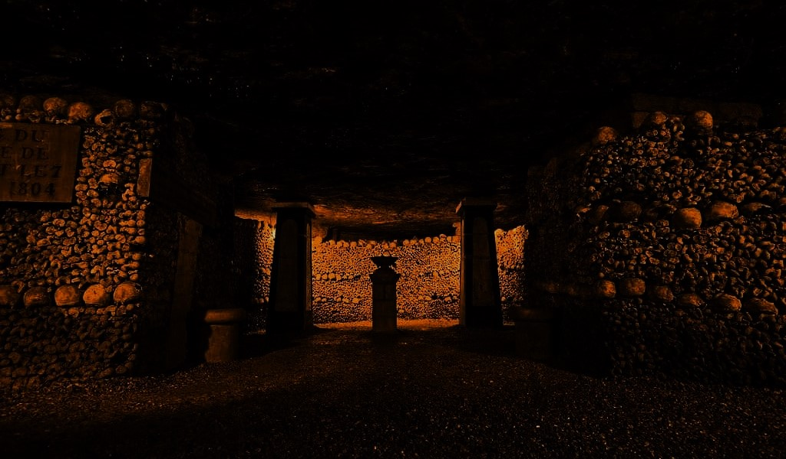

LES CATACOMBES
Véritable labyrinthe au cœur du Paris souterrain,
un site unique dans d’anciennes galeries de carrière
Ouvert au public dès 1809, le plus grand ossuaire du monde
abrite les restes de plusieurs millions de
Parisiens au fur et à mesure de la fermeture
des cimetières de Paris.
-
Superficie des galeries : 3140 hectares soit 40%
de la superficie totale de Paris.
-
Profondeur des galeries : de 2,50 m vers le rue Vaugirard à 30 m
sous les rues de l'Aude et des Artistes
-
Nombres de kilometre de galeries : 300 kilometre
Nombre de squelette enteposé : plus de 6 millions
3 BONNES RAISONS DE DÉCOUVRIR LES CATACOMBES DE PARIS
Plus grand ossuaire souterrain du monde, les Catacombes de Paris constituent un incontournable des monuments parisiens : un parcours de 1 500
mètres de long à 20 mètres de profondeur, pour une visite hors du commun.
